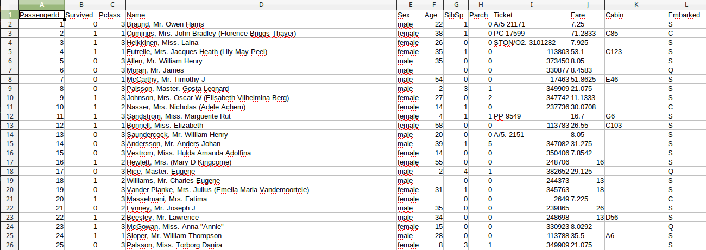

Projet 5
Vous allez travailler sur le jeu de données suivant (à télécharger): titanic.csv
Ce jeu de données contient des informations sur une partie des passagers (plus exactement sur 891 passagers) du Titanic.
projet 5.1
Ouvrez le fichier "titanic.csv" à l'aide d'un tableur.
Vous devriez obtenir quelque chose qui ressemble à ceci :

Trouvez, en faisant des recherches sur le web, la signification des différents descripteurs : "PassengerId", "Survived", "Pclass"... (ce jeu de données est un grand classique en "machine learning", vous ne devriez donc pas avoir trop de mal à trouver ces informations)
projet 5.2
L'idée de ce projet est d'utiliser l'algorithme des k plus proches voisins afin de déterminer si un passager X (non présent dans le fichier titanic.csv) ayant certaines caractéristiques ("PassengerId", "Pclass", "Name", "Sex"...) aurait survécu au naufrage du Titanic.
Pour parvenir à ce résultat, un travail de préparation des données va être nécessaire (tout "data scientist" un peu sérieux vous dira que ce travail de préparation des données est absolument fondamental), vous allez donc devoir passer par pas mal d'étapes que voici :
-
Tous les types de données ne vont pas forcement être pertinents, par exemple, d'après vous, lors du naufrage, le nom du passager a-t-il eu une quelconque importance sur le fait qu'il ait ou non survécu ? (nous ne tiendrons pas compte du fait que certaines personnes aient pu être privilégié au vu de leur nom de famille, sur les 891 passagers présents dans le fichier titanic.csv, ce phénomène est négligeable). En analysant le contenu du fichier titanic.csv (par exemple à l'aide d'un tableur), choisissez les descripteurs qui vous paraissent les plus pertinents. Vous effacerez les colonnes qui vous semblent inutiles directement dans le tableur ou dans votre programme python à l'aide de la bibliothèque Pandas (n'hésitez pas à consulter la documentation de Pandas, notamment l'utilisation de la méthode drop).
-
Pour certains passagers, il manque des données. Par exemple, l'âge du passager ayant pour "PassengerId" 6 n'est pas renseigné. La solution de facilité serait de supprimer du fichier les passagers ayant des données incomplètes. Il y a d'autres possibilités, essayez d'en proposer au moins une.
-
L'utilisation de l'algorithme des k plus proches voisins nous oblige à proscrire les données non numériques. Par exemple, la colonne "Sex" ne peut pas être utilisée telle quelle, l'algorithme n'est pas capable de traiter les "male" et "female". Vous devez donc modifier certaines données. Pour ce faire, je vous conseille d'utiliser la bibliothèque Pandas. Si après quelques recherches vous n'arrivez pas à trouver la solution, n'hésitez pas à demander de l'aide.
-
Nous avons vu que pour utiliser le "KNeighborsClassifier" de scikit-learn, il est nécessaire de séparer les données et le label. Dans notre cas, le label correspond à la colonne "Survived" (c'est ce que nous cherchons à déterminer pour un passager X). Il est donc nécessaire de séparer les données contenues dans la colonne "Survived" des autres données afin d'avoir 2 tableaux : un tableau contenant les données que vous aurez sélectionnées ci-dessus et un tableau contenant uniquement le label "Survived". Ici aussi Pandas vous permet d'effectuer cette séparation relativement facilement, faites quelques recherches (si vous ne trouvez pas au bout d'un certain temps, n'hésitez pas à demander de l'aide).
-
Un modèle de machine learning n'a de sens que s'il est possible de l'évaluer. La méthode classique pour effectuer cette évaluation est de séparer les données de départ (les 891 passagers) en 2 groupes : un groupe que l'on nomme souvent "train" qui servira à "entrainer" l'algorithme de machine learning et un groupe "test" qui servira à évaluer la capacité de l'algorithme à prévoir des résultats corrects. Après cette séparation vous devriez avoir les tableaux suivants : X_train (les données d'entrainement), y_train (les labels correspondant aux données d'entrainement), X_test (les données de test) et y_test (les labels correspondant aux données de test). Scikit-learn propose la méthode "train_test_split" qui permet d'effectuer cette séparation très simplement, n'hésitez pas à consulter la documentation de scikit-learn afin d'en savoir plus sur l'utilisation de "train_test_split"
-
La méthode "fit" de scikit-learn vous permet de procéder à l'entrainement de l'algorithme (en utilisant les données X_train et y_train).
-
La méthode "predict", toujours de scikit-learn, vous permet de tester l'entrainement de votre algorithme. Cette méthode va permettre de générer un tableau que vous nommerez y_pred, y_pred contiendra les labels prévus par l'algorithme pour les données contenues dans X_test.
-
Pour évaluer l'entrainement de l'algorithme, il suffira de comparer y_pred et y_test. On pourra obtenir le pourcentage de réponses correctes en utilisant la méthode "metrics.accuracy_score" (voir la documentation de scikit-learn).
-
Si vous obtenez un pourcentage correct (supérieur à 65% de bonnes réponses pour y_pred), vous pouvez alors passer à l'écriture de la fonction qui vous permettra de prévoir si votre passager X aurait survécu au naufrage du Titanic.
Ce projet n'est pas simple à réaliser, mais il va vous permettre de mieux comprendre le travail d'un "data scientist" (un des métiers les plus demandés sur le marché du travail actuellement).